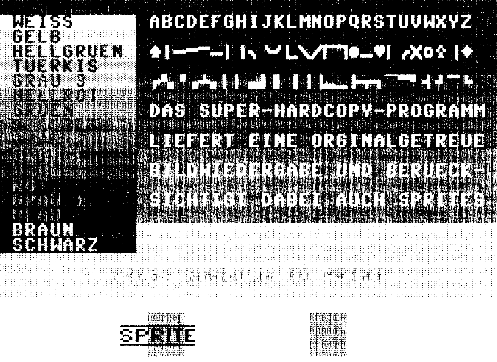
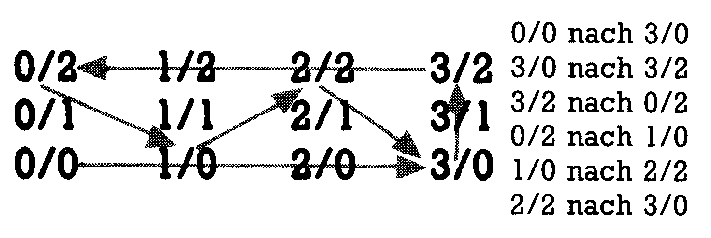
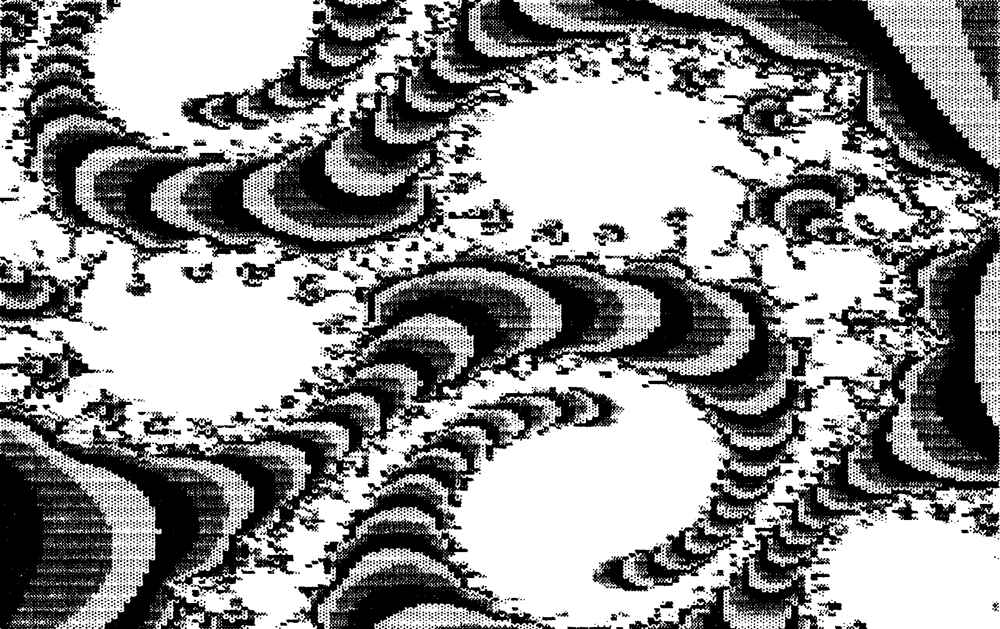

Extravagante Hardcopies
Auf den nächsten Seiten erwartet Sie eine Sinfonie für Drucker, geschrieben in Maschinensprache und aufgeführt auf Epson, VC 1520 und Melchers CP 80 X. Dabei handelt es sich um fantastische Hardcopy-Programme mit höchster Auflösung.
Hardcopy-Routinen werden immer raffinierter! Während es bisher schon als Besonderheit galt, Graustufen zu erzeugen, berücksichtigt das Programm »Super-Hardcopy« auch Rasterzeilen-Interrupts und Sprites. Dabei werden die Farbwerte in bis zu neun Graustufen umgerechnet. Es ist für einen Epson RX-80 ausgelegt, läßt sich aber ohne weiteres an alle Drucker anpassen, die eine Auflösung von mindestens 1600 Punkten pro Druckzeile erreichen. Probleme mit verschiedenen Interfaces dürfte es keine geben, da sich bei »Super-Hardcopy« alle Drucker-Parameter einstellen lassen.
Nicht weniger komfortabel ist die Hardcopy für den Plotter VC 1520. Diese wurde für den Ascompiler (64’er, Ausgabe 1/86, Seite 58) geschrieben. Somit läßt sich eine farbige Hardcopy in etwa drei bis vier Stunden erzeugen (je nach Anzahl der Farbwechsel), entgegen etwa dem 6fachen Zeitaufwand in der uncompilierten Version.
Zu guter Letzt sei noch der Melchers CP 80 X erwähnt. Sonst als »schwarzes Schaf« ausgeklammert (die Grafik-Auflösung ist anders als bei Epson-Druckern, nämlich 8x1280), ist er mit einer komfortablen Multi-Color-Hardcopy vertreten.
»Super-Hardcopy«
Geben Sie das Programm »SUPER-HARDCOPY« (aus Listing 1) mit dem MSE ein, und speichern Sie es. Beim erneuten Laden werden Sie feststellen, daß es sich um ein Basic-Programm handelt, das Sie mit dem MSE eingegeben haben. Das klingt zwar zunächst verwunderlich, bei näherem Hinsehen werden Sie jedoch feststellen, daß ein Basic-Listing hier wenig hilfreich gewesen wäre. Das Ende des Basic-Teiles muß exakt bei 5260 liegen, da alle Variablen und ein Maschinen-Programm direkt daran angehängt sind. Ein Zeichen zuviel oder zuwenig würde bedeuten, daß das fertige Programm nicht lauffähig sein kann. Also Ändern Sie das Programm auf keinen Fall! Nun können Sie das Programm mit RUN starten. Daraufhin befinden Sie sich im Eingabemenü, in dem alle Parameter angezeigt werden. Die Eingaben erfolgen über die rechte Cursortaste und werden mit RETURN übernommen. Die eingestellten Werte sind für einen FX 80 mit Görlitz-Interface vorgesehen.
Parameter verändern: Haben Sie keinen Epson-Drucker oder ein anderes Interface, so beantworten Sie die Frage »Parameter verändern« mit »ja«. Als nächstes geben Sie die Art des Interfaces ein. Zur Wahl steht ein paralleles Centronics-Interface oder der serielle Bus des C 64, entsprechend einem Hardware-Interface im oder am Drucker. Die Gerätenummer des Druckers wird normalerweise mit 4 belegt. Haben Sie kein Görlitz-Interface, müssen Sie bei »Sekundäradresse« die Adresse eingeben, die bei Ihrem Interface den Linearkanal öffnet oder Transparenzdruck auslöst. Bei einem parallelen Centronics-Interface können für Gerätenummer und Sekundäradresse beliebige Werte eingesetzt werden. Die nächste wichtige Eingabe ist die Startsequenz für den Drucker. Sie wird immer vor dem Ausdruck einer Grafik gesendet. In dieser Sequenz sollte der Drucker auf einen Zeilenabstand von 8 Punkten eingestellt werden. Sie können aber noch zusätzlich Befehle senden, zum Beispiel um den linken Rand zu setzen, um die Hardcopy in die Mitte zu rücken, etc. Alle Codes müssen Sie hexadezimal, durch ein Leerzeichen voneinander getrennt, eingeben. Als nächstes wird die Grafik-Sequenz eingegeben. Durch sie wird der Drucker angewiesen, 1600 Grafikbyte in vierfacher Punktdichte auszudrucken. Die Eingabe ist analog zur Startsequenz. Im Menüpunkt »Farbcodetabelle« können Sie zwischen 0 und 5 wählen. Hier wird festgelegt, welcher Farbe welcher Grauwert zugeordnet wird. Die Graustufen reichen von 0 (weiß) bis 9 (schwarz). Die Tabellen 0 (für hohe Auflösung) und 1 (geringere Auflösung) sind bereits definiert. Die anderen stehen Ihnen zur freien Verfügung. Ist die gewünschte Tabelle ausgesucht, kann diese nach einem RETURN abgeändert, oder nach einem SHIFT/RETURN übergangen werden.
Die eingegebenen Parameter können Sie nun auf Wunsch speichern. Falls dies nicht geschieht, ist »Super-Copy« nachdem der C 64 einem Reset durchgeführt hat, aktiv.
Es gibt nun drei Möglichkeiten, das Programm zu starten: SYS 49328, Betätigen der RESTORE-Taste oder Auslösen eines Resets (über einen Taster).
Im dritten Fall sind einige Besonderheiten zu beachten. Da bei einem Reset auch die CIAs zurückgesetzt werden, kann man nicht mehr feststellen in welchem Bereich der Video-Controller arbeitete. Deshalb müssen Sie zunächst mit Hilfe der Funktionstasten den richtigen Bereich suchen. Der Druckvorgang wird durch die RETURN-Taste ausgelöst.
Es besteht die Möglichkeit den Druckvorgang vorzeitig abzubrechen. Zum einen durch RUN/STOP, zum anderen durch CTRL + RUN/STOP. Letzteres hat den Vorteil, daß das unterbrochene Programm fortgesetzt wird, sofern der Druck nicht durch einen Reset ausgelöst wurde.
Zum Schluß sei noch gesagt, daß über eine Million Einzelpunkte (über 125 KByte) berechnet und übertragen werden müssen, und deshalb ein Ausdruck fast sechs Minuten dauert. Dies können Sie am besten an dem in Listing 2 abgedruckten Demo-Programm testen, das bereits fünf Rasterzeilen-Interrupts und ein Sprite enthält (siehe Bild 1).

Farb-Hardcopy für Plotter VC 1520
Da das Programm für den Ascompiler geschrieben ist, den aber wahrscheinlich noch nicht jeder hat, haben wir den Objektcode als MSE-Listing abgedruckt. Sie können daher wählen, ob Sie lieber das Basic-Programm (Listing 3) abtippen und anschließend compilieren, oder ob Sie gleich das MSE-Listing »HC1520 OBJ« (Listing 4) verwenden. Beim Compilieren liegt die empfohlene Startadresse bei $8000. Es ist nicht zu empfehlen, die Basic-Version zu starten, da eine Grafik etwa 18 Stunden in Anspruch nehmen würde. Das compilierte Programm starten Sie dann mit SYS (Startadresse), die in der abgedruckten Version bei 32768 ($8000) liegt.
Es werden insgesamt 32000 Punkte pro Grafik, einzeln und in der jeweiligen Farbe ausgedruckt. Dabei ist ein Punkt nicht durch ein einfaches Aufsetzten des jeweiligen Farbstiftes definiert. Jedem Punkt entspricht eine 3x4-Matrix, in der untereinander 6 Punkte durch kurze Linien verbunden werden. Das ist auch unbedingt nötig, da die Farbstifte am Ende einer Grafik sichtlich nachlassen. Die Matrix ist in Bild 2 dargestellt. Da der Ascompiler keine Befehle zur Datenübertragung über den seriellen Port zur Verfügung stellt, mußte dies in Form eines Plottertreibers von etwa 250 Byte Länge geschehen. In Ermangelung der Befehle READ und DATA beim Ascompiler, wird der Treiber mit einem Trick in den Bereich ab $9000 geschrieben. Mit dem PRINT-Befehl wird das Maschinenprogramm auf den Bildschirm gebracht. Es ist codiert mit den Buchstaben A bis P. Ein Byte wird durch jeweils 2 Buchstaben definiert. Das Programm liest die Information direkt vom Bildschirm und schreibt sie direkt in den Speicher ab $9000.

Zum Ausdruck benötigt »HC 1520« die Startadresse der Grafik. Folgende Startadressen sind möglich:
$2000, $4000, $6000, $A000, $E000
Damit ist es in der Lage auch Bilder von Simons Basic und anderen Erweiterungen zu plotten. Die Grafik wird immer von $2000 aus auf den Drucker gebracht. Bilder aus einem anderen Bereich werden dorthin verschoben.
In der Basic-Version können nur Bilder ab $2000 geplottet werden, da im Basic die Verschieberoutine nicht arbeitet. Das Programm gliedert sich wie folgt.
| 100 bis 930: | Hauptprogramm |
| 1000 bis 1350: | Unterprogramm Punkt plotten |
| 2000 bis 2390: | Unterprogramm Plottertreiber laden |
| 3000 bis 3160: | Unterprogramm Multicolor-Grafik in Plotterfarben auf den Bildschirm |
| 4000 bis 4390: | Unterprogramm Startadresse holen und eventuell Grafik in den Bereich ab $2000 kopieren |
Hardcopy für CP 80 X
Dieses Hardcopy-Programm ist eine geänderte Fassung der im Sonderheft 4 veröffentlichten Multi-Color-Hardcopy für den Epson RX/FX 80. Geben Sie »MULTICOLOR $9« (Listing 5) mit dem MSE ein und speichern Sie es. Das Programm belegt den Speicher ab $9000, kann aber mit dem SMON leicht verschoben werden. Wenn Sie es also nach $C000 bringen wollen, verschieben Sie es zunächst mit »W 9000 91A6 C000« und ändern dann mit »V C000 C1A6 9000 9000 91A6« alle absoluten Adressen. Der Aufruf der Routine erfolgt mit:
OPEN (Filenummer),4:SYS 36864,(Filenummer),(Seite),a,b,c,d: CLOSE 4
Für (Filenummer) setzen Sie eine 0 ein, wenn Sie den User-Port benutzen, ansonsten geben Sie eine 4 ein. Der Parameter (Seite) gibt die Lage des Grafikbildschirms an und errechnet sich aus der Nummer des Grafikbildschirms mal 32. Für eine Grafik, die bei $2000 liegt ist das 32 (Nummer 1), ab $4000 die 64 (Nummer 2) etc. Die Parameter a, b, c und d geben an, wie die Bitkombinationen den Helligkeitswerten von Weiß nach Schwarz zugeordnet werden. Dabei müssen a, b, c und d den Wert der Bitkombinationen annehmen, also 0 für »00«, 1 für »01«, 2 für »10«, 3 für »11«. Der Aufruf SYS 36764,4,32,2,1,3,0 gibt demnach eine ab $2000 liegende Grafik auf Filenummer 4, und den Farben Weiß für »10«, Hellgrau für »01«, Dunkelgrau für »11« und Schwarz für »00« aus. Bild 3 enthält einen Ausdruck mit den Werten »32,0,1,2,3«
